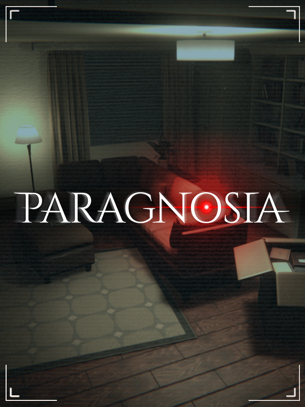

Paragnosia
Paragnosia
Details
|
 |
|
| Playtime | 3h 19m 0s |
| Last Activity | 2026-10-06 1:01:53 |
| Added | 2026-03-18 11:21:11 |
| Modified | 2026-03-18 11:21:27 |
| Completion Status | Played |
| Library | Steam |
| Source | Steam |
| Platform |
PC (Windows) |
| Release Date | 2024-10-24 |
| Community Score | 72 |
| Critic Score | |
| User Score | |
| Genre |
Adventure Indie Simulator |
| Developer | Sine Coda |
| Publisher | Sine Coda |
| Feature |
Single Player |
| Links |
Steam Discord YouTube Bluesky |
| Tag |
3D Adventure Atmospheric Dark Demons First-Person Hidden Object Horror Logic Modern Mystery Point & Click Psychological Psychological Horror Puzzle Realistic Simulation Singleplayer Stealth Time Manipulation |
Description
They've haunted you for too long. Tonight they want to strike,
but you're no longer helpless. You have the tools to banish them
for good. Expect them to manifest as anomalies in every inch of
your apartment to escape your vigilance.

Move your camera along the track, rotate it at 360°, spot and take pictures of anomalies to exorcise* them. Watch out for your battery limit.


When you complete a round, the number of missed anomalies is revealed to you by the system. For each anomaly you miss, you lose one of the 6 locks on the seal that protects you from the entities. Keep at least one lock until 8am to have a chance of banishing the source of evil. Lose them all and you're doomed.
*: CAM-AND-RAIL cannot be held responsible for any injury or death resulting from an unexorcised spirit, due to insufficient observation performed with our equipment.
FIND ANOMALIES
You'll have to be very vigilant to make it through the night.Move your camera along the track, rotate it at 360°, spot and take pictures of anomalies to exorcise* them. Watch out for your battery limit.
PLAY TIME
45-180 minutesHOLD ON TILL THE END OF THE NIGHT
Your goal is to survive for 8 consecutive hours. With each round, a new set of anomalies appear in the apartment, as many opportunities for them to trap you or destroy the camera!When you complete a round, the number of missed anomalies is revealed to you by the system. For each anomaly you miss, you lose one of the 6 locks on the seal that protects you from the entities. Keep at least one lock until 8am to have a chance of banishing the source of evil. Lose them all and you're doomed.
*: CAM-AND-RAIL cannot be held responsible for any injury or death resulting from an unexorcised spirit, due to insufficient observation performed with our equipment.